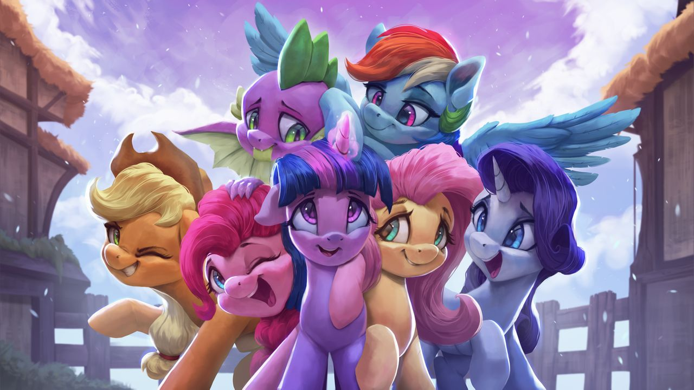

Rainbow magic begins emanating from the rest of the Mane 6, as the magic of friendship lifts them into the air. The Elements of Harmony in Thanos's gauntlet start glowing, adding their magic to the spell. Thanos watches the HARMONIOUS RAINBOW build in power, then faces the rainbow head-on as it comes crashing down.
His attempts to block it are no use - the rainbow goes straight through his defenses, forcing Thanos to his knees. As the light fades, the Mane 6 watch as the Elements of Harmony detach from the Infinity Gauntlet. His body begins to grow transparent.
"Don't worry," Twilight says. "You'll live. It's a banishing spell that will send you far, far away. You'll never threaten our world again."
Thanos stands with a grimace. "So, that's what the Elements of Harmony can do." He looks down at his body, which continues to fade away. Staring them down, he continues. "Powerful, but not invincible. When I finish my quest for the Stones, I'll be back, and half of you will regret ever crossing my path."
Pinkie Pie blows a raspberry. "Yeah right, you big purple meanie."
And with that, Thanos is gone.
With a cough, the Doctor points towards the TARDIS, where Derpy is waiting at the controls. "Well, that was fun. Shall we take the Elements and go?"
* * *
Time: Shortly after Nightmare Moon's return
They arrive just in time to see their past selves disappear in the TARDIS for their time heist. Twilight groans.
"Have I ever mentioned how much I hate time travel? Can we never, ever do that again?"
"Can't say I relate", the Doctor says. "Once you do it once, how can you ever stop?"
"Yeah Twilight!" Derpy says. "It's so fun!"
Twilight sighs. As the rest of the Mane 6 place the Elements of Harmony back where they belong, she turns to ask the Doctor a question. "You've been all over the universe, right?"
"Yes."
"In your travels, did you run across Thanos before?"
"Well, I've never met him until now, but I have heard of him. He has a reputation, and it isn't a pleasant one."
Twilight continues talking. "Right. After we decided to BRING BACK (the) ELEMENTS BY PULLING A TIME HEIST, you were the pony that entered the time the TARDIS was going to jump to. Somehow, that time you picked was the exact moment Thanos was about to leave the planet. Suspicious, don't you think?"
The Doctor shrugs. "Good luck, I suppose."
"The odds we'd randomly arrive at the same time as Thanos, purely by random chance, are incredibly, astronomically low. Unless, the pony holding the reins knew something beforehand. You knew we needed to confront Thanos this entire time, didn't you? That's why you weren't surprised we needed to go back to The Castle of the Two Sisters. That's why everything ended in a neat stable time loop, with no errant timelines." She looks at Doctor Whooves accusingly. "Well? Am I right?"
The Doctor stares back for a moment, then smiles. "Nothing gets by you, does it? You know, if I wasn't already travelling with Derpy, I might have asked you to be my companion. I can tell it would have been fun."
"That's nice of you to offer, but I'm very happy in Ponyville. Besides, I've had enough time travelling for a lifetime."
The Doctor nods his head. "Fair enough. I do apologize. If you had gotten stuck, I would have given you more help, but the six of you handled it just fine. Equestria is in good hooves."
At that, Twilight finally smiles back. "Apology accepted, Doctor Whooves."
Applejack blows a loud, shrill whistle. "We're all set! The Elements are back where we found them."
"Good!" Twilight calls back. "Let's go, before we cause any temporal paradoxes."
Stepping back into the TARDIS, there is a final WHOOM, as the TARDIS carries the Mane 6 one last time: back home.
Thanks for solving My Little Pony: Puzzles are Magic!
Solutions will go live at the end of hunt. If you have questions on how a puzzle was supposed to work, you can email us at puzzlesaremagic@gmail.com. Make sure to include your team name in the email, so that we can verify you're from a team that finished the hunt.
We also have a post-hunt survey here. Please fill this out! We'd love to hear your thoughts about what worked and what didn't.
And remember: friendship isn't always easy, but there's no doubt it's worth fighting for.
- The Puzzles are Magic crew